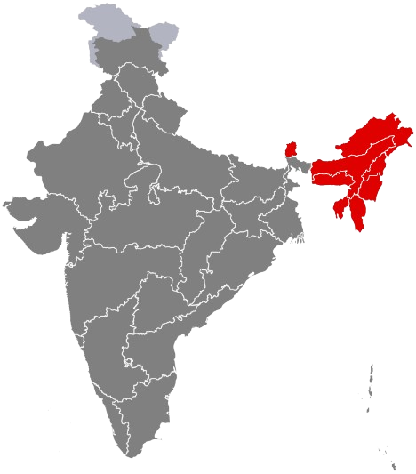

Northeast India
पूर्वोत्तर भारत / উত্তৰ-পূৰ্ব ভাৰত
Gateway to Southeast Asia — a land of ancient tribes, dense rainforests, mighty rivers, and unmatched biodiversity. Known as the Seven Sisters, the Northeast represents India’s cultural frontier, ecological backbone, and strategic eastern horizon.

About Northeast India
Northeast India, comprising the Seven Sisters and Sikkim, represents one of the world's most biodiverse regions with over 200 tribal communities, each preserving unique languages, customs, and traditions. This strategically important region serves as India's gateway to Southeast Asia while maintaining its distinct cultural identity shaped by indigenous practices and natural beauty.
From the tea gardens of Assam to the living root bridges of Meghalaya, from the tribal festivals of Nagaland to the Buddhist monasteries of Sikkim, Northeast India showcases incredible diversity in a compact geographical area. The region's pristine landscapes, rich biodiversity, vibrant tribal cultures, and warm hospitality make it a unique treasure within India's cultural mosaic.
The Seven Sisters & Sikkim

Assam
Gateway to Northeast - World famous tea gardens, mighty Brahmaputra river, Kaziranga rhinos, and rich Ahom heritage.
Tea Capital
Arunachal Pradesh
Land of Rising Sun - First sunrise in India, Tawang monastery, pristine valleys, diverse tribes, and untouched natural beauty.
Sunrise State
Manipur
Jewel of India - Loktak Lake floating islands, classical Manipuri dance, sports excellence, and rich Meitei culture.
Sports Hub
Meghalaya
Abode of Clouds - Wettest place on Earth Cherrapunji, living root bridges, matrilineal society, and stunning waterfalls.
Rainiest Region
Mizoram
Land of Blue Mountains - Rolling hills, bamboo forests, vibrant Mizo culture, high literacy rate, and hospitable people.
Peaceful State
Nagaland
Land of Festivals - Hornbill Festival showcase, warrior tribes, distinct Naga culture, handicrafts, and vibrant traditions.
Festival Capital
Tripura
Royal Heritage - Manikya dynasty palaces, Ujjayanta Palace, tribal diversity, bamboo handicrafts, and ancient temples.
Royal Legacy
Sikkim
Himalayan Kingdom - Kanchenjunga peak, Buddhist monasteries, organic state, serene landscapes, and rich Tibetan culture.
Organic StateCultural Heritage

Tribal Diversity
200+ indigenous tribes with unique languages, customs, colorful traditional attire, and ancient oral traditions passed through generations.

Folk Music & Dance
Energetic Bihu dance, bamboo Cheraw dance, tribal folk songs, traditional drums, and vibrant performances celebrating harvests and festivals.

Handicrafts & Textiles
Intricate bamboo crafts, handloom textiles, traditional shawls, wood carvings, cane furniture, and indigenous artisan products.

Languages & Scripts
Assamese, Bengali, numerous tribal languages, unique scripts, oral storytelling traditions, and rich linguistic diversity.

Festivals & Celebrations
Hornbill Festival showcase, Bihu festivities, Wangala harvest celebration, Sangai Festival, and vibrant tribal cultural events.

Architecture & Monasteries
Traditional bamboo houses, Tibetan Buddhist monasteries, Tawang Monastery, unique tribal architecture, and spiritual centers.
Tourism Highlights
Kaziranga National Park
UNESCO World Heritage Site, home to one-horned rhinoceros and Bengal tigers
Assam
Living Root Bridges
Ancient bio-engineering marvels created by Khasi tribes over centuries
Meghalaya
Tawang Monastery
India's largest monastery at 10,000 feet with stunning Himalayan views
Arunachal Pradesh
Loktak Lake
World's only floating lake with unique phumdi islands ecosystem
Manipur
Hornbill Festival
Festival of Festivals showcasing all Naga tribes' culture and traditions
Nagaland
Majuli Island
World's largest river island with Vaishnavite monasteries and satras
AssamNortheast Cuisine

Rice-Based Staples
Sticky rice, bamboo rice, various rice preparations central to every meal, often served with aromatic accompaniments
Fermented Foods
Fermented fish, bamboo shoots, soybean paste, traditional preservation methods creating unique tangy flavors
Indigenous Ingredients
Wild herbs, indigenous vegetables, bamboo shoots, local greens, smoked meats, and unique tribal cooking techniques
Tea Culture
World-famous Assam tea, traditional butter tea in Buddhist regions, and local tea varieties integral to hospitality
Festivals & Celebrations

Hornbill Festival
Nagaland's grand festival of festivals showcasing 16 major tribes, traditional dances, music, and warrior culture
Bihu Festival
Assamese New Year celebration with energetic Bihu dance, traditional music, feasting, and three seasonal variants
Wangala Festival
Garo harvest festival celebrating Saljong (Sun God) with traditional drums, dance, and thanksgiving rituals
Tribal Celebrations
Diverse tribal festivals marking seasons, harvests, community bonds, with unique customs for each indigenous group
Economy & Industries
Regional GDP
Growing economic potential with focus on sustainable development
Tea Production
Of India's total tea production from Assam
Biodiversity Hotspot
One of world's 36 biodiversity hotspots
Key Industries
- Tea Cultivation & Processing - world's largest tea-growing region
- Handloom & Handicrafts - bamboo, cane, silk weaving traditions
- Tourism & Eco-tourism - adventure and cultural tourism hub
- Oil & Natural Gas - petroleum resources in Assam
- Hydroelectric Power - immense renewable energy potential
Agricultural Products
- Tea, Rice, Maize - primary agricultural crops
- Bamboo & Cane - abundant forest resources
- Spices & Fruits - ginger, turmeric, pineapple, orange
- Medicinal Plants - rich biodiversity of healing herbs
- Silk - Muga, Eri, Pat silk varieties from Assam
Notable Personalities
Northeast India has nurtured extraordinary talents in music, sports, literature, and activism who have brought honor and recognition to the region and the nation.

Bhupen Hazarika
Assam
1926-2011
"Bard of Brahmaputra" - legendary singer, composer, and filmmaker. His songs celebrated humanity and Assamese culture. Bharat Ratna recipient.

Mary Kom
Manipur
Born 1983
Six-time World Boxing Champion and Olympic bronze medalist. "Magnificent Mary" broke barriers for women in sports. Padma Vibhushan recipient.

Mamang Dai
Arunachal Pradesh
Born 1957
Sahitya Akademi Award-winning author and poet. Her works explore Arunachal's indigenous cultures and landscapes. Padma Shri recipient.

Irom Sharmila
Manipur
Born 1972
"Iron Lady of Manipur" who fasted for 16 years against AFSPA. Human rights activist and symbol of peaceful resistance.

Bhaichung Bhutia
Sikkim
Born 1976
India's most celebrated footballer, first to play professionally in Europe. "Sikkimese Sniper" transformed Indian football. Padma Shri and Arjuna Award winner.

Rani Gaidinliu
Nagaland/Manipur
1915-1993
Naga spiritual and political leader who fought against British rule from age 13. Imprisoned for 14 years. Padma Bhushan recipient.

Hima Das
Assam
Born 2000
"Dhing Express" - first Indian woman to win gold in track event at IAAF World Championships. Inspired millions with her meteoric rise.

Mirabai Chanu
Manipur
Born 1994
Olympic silver medalist weightlifter and World Champion. Her dedication brought glory to India at Tokyo 2020. Padma Shri and Major Dhyan Chand Khel Ratna awardee.